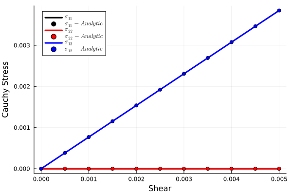
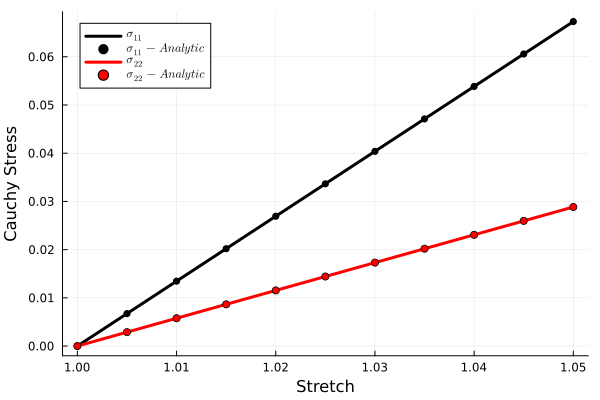

LinearElastic
ConstitutiveModels.LinearElasticity — Type
struct LinearElasticity <: ConstitutiveModels.AbstractHyperelasticityConstitutiveModels.helmholtz_free_energy — Method
$\psi = \frac{1}{2}\lambda tr\left(\varepsilon\right)^2 + \mu \varepsilon:\varepsilon$
helmholtz_free_energy(
model::LinearElasticity,
props,
∇u::Tensors.Tensor{2, 3, T, 9},
θ
) -> Any
ConstitutiveModels.initialize_props — Method
initialize_props(
_::LinearElasticity,
inputs::Dict{String}
) -> Any
Simple shear
Analytic solution
Fill me out
Verification
Here is a comparison of an analytic solution to the uniaxial stress boundary value problem in displacement control.
using ConstitutiveModels
using Plots
function linearelastic_simple_shear()
inputs = Dict(
"density" => 1.0,
"Young's modulus" => 1.0,#u"MPa",
"Poisson's ratio" => 0.3
)
model = LinearElastic()
motion = SimpleShear(t -> 0.01t)
out = simulate_material_point(cauchy_stress, model, inputs, motion, 1.0)
props = initialize_props(model, inputs)
εs = map(x -> x.kinematics, out)
γs = map(x -> 2 * x[1, 2], εs)
σs = map(x -> x.material_output, out)
Zs = map(x -> x.state, out)
μ = props[3]
σ_11s_an = 0. * γs
σ_22s_an = 0. * γs
σ_12s_an = μ * γs
plot(motion, εs, σs, Zs, σ_11s_an, σ_22s_an, σ_12s_an)
end
linearelastic_simple_shear()
Uniaxial Strain
Analytic solution
Fill me out
Verification
Here is a comparison of an analytic solution to the uniaxial stress boundary value problem in displacement control.
using ConstitutiveModels
using Plots
function linearelastic_uniaxial_strain()
inputs = Dict(
"density" => 1.0,
"Young's modulus" => 1.0,#u"MPa",
"Poisson's ratio" => 0.3
)
model = LinearElastic()
motion = UniaxialStrain(t -> 1 + 0.05t)
out = simulate_material_point(cauchy_stress, model, inputs, motion, 1.0)
props = initialize_props(model, inputs)
εs = map(x -> x.kinematics, out)
λs = map(x -> x[1, 1] + 1, εs)
σs = map(x -> x.material_output, out)
Zs = map(x -> x.state, out)
λ, μ = props[2], props[3]
σ_11s_an = λ * (λs .- 1.) .+ 2. * μ * (λs .- 1.)
σ_22s_an = λ * (λs .- 1.)
plot(motion, εs, σs, Zs, σ_11s_an, σ_22s_an)
end
linearelastic_uniaxial_strain()